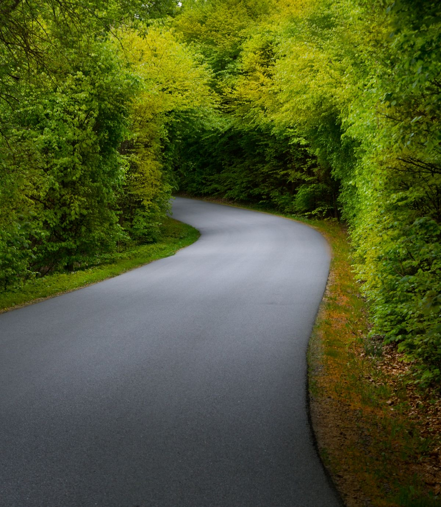
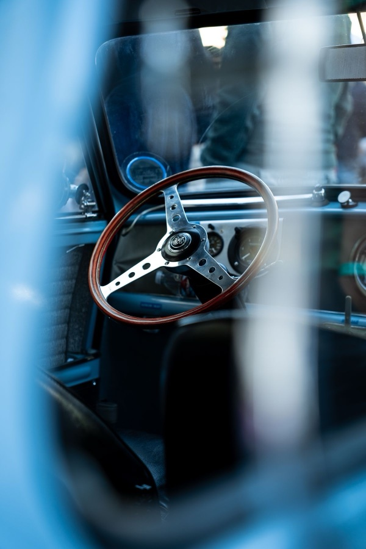
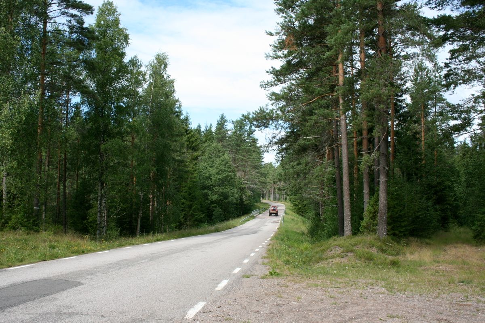

For car people. For iPhone.
Roads worth
remembering.
The iPhone app for car enthusiasts.
Discover scenic routes and share photos and moments from your drives.
Already have access to the app? Create a verified account—no invite needed.

A place for the drive.
And everything around it.
Not just where you’re going.
What makes you want to go.
Discover / Your car life, in good company
You know
the feeling.
The car you turn back to look at.
The photo you send to a friend.
The road you can’t keep to yourself.
Discover brings photos, posts and route discoveries into one visual feed. Follow people who share your interests. Keep up with your friends. Save something for your next drive.
Follow someone straight away. Gara friendships need acceptance, so sharing with friends means something.

Explore / Find a reason to head out
Less routine.
More road.
Find scenic routes on GaraMap.
See the shape of the drive before you go.
Browse the map, search for a place, and open a route to see its details. Preview first. Start only when you choose.
Fixed routes
A defined path to discover.
Open routes
A start and finish. Your own way between them. No directions.
A route is not a guarantee of road access or suitability. Check conditions and set up while safely parked.

For the love of the drive
A good drive
isn’t a race.
Enjoy the road. Respect its limits.
There’s always another reason to return.
A few things, clearly
Before
you go.
How do I join Gara?
If you already have access to the iPhone app, you can create a verified account without an invite. Use verified email, Sign in with Apple or Google where offered. Gara is for adults aged 18 and over. The public App Store download will be linked here when its listing is live.
What can other people see?
Your profile, garage and shared content follow Gara’s visibility rules. Following and accepted friendship are different. Your raw GPS history from manually recorded route drives is not shown through ordinary access to your profile. Photos and routes you share can still reveal places. See the Privacy Policy.
Can I message other drivers?
Direct Messages is not part of version 1.0. Connect through profiles, follows, accepted friendships, posts and comments.
How do I delete my account?
In the app, open Profile → Settings → Account → Delete account. You’ll be asked to confirm your identity. If you cannot sign in, contact Support. Deleting the app alone does not delete your account.
Your next good drive starts with curiosity
Meet your
kind of app.
Already have Gara on your iPhone?
Create a verified account. No invitation required.
Public App Store download coming here when the listing is live.
For adults 18+. Availability depends on the app version and region.